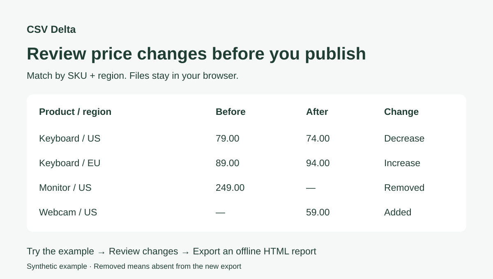

如何比较两份 CSV，忽略行顺序和更新时间
两次导出之间，行顺序、更新时间和数值格式可能都变了。本文用三套模拟数据，演示如何按主键找出真正需要核对的变化。无需安装软件，文件在浏览器内处理。
更新：2026-10-07 · 约 5 分钟
为什么逐行 diff 容易误导
文本 diff 比较的是行的位置和字符串。记录重排后，同一个商品可能显示为删除再新增。按 sku＋region 匹配，才能比较同一地区的同一商品。不要只选 SKU：示例中同一个 SKU 出现在两个地区。
操作步骤
- 下载下方一组旧、新 CSV，在在线工具中分别选择。价格表示例也可以在首页一键体验。
- 按案例设置主键列；然后选择忽略列、数值列，绝对容差保持 0。
- 点击“比较”，核对数量及具体字段。筛选“所有行”可查看未变记录。
- 导出 HTML 报告，离线打开，核对报告中的设置与结果。
1. 价格表审核
- 主键:
sku + region - 忽略列:
updated_at - 数值列:
price - 绝对容差:
0
| 新增 | 移除 | 修改 | 未变 |
|---|---|---|---|
| 1 | 1 | 2 | 2 |
美国键盘 79→74，欧洲键盘 89→94；新增 P-005 摄像头，移除 P-003 显示器。P-004 的 9.99 与 9.990 在数值模式下相等。移除仅表示记录不在新文件中，不证明商品已下架。

2. 数据库导出核对
- 主键:
id - 忽略列:
exported_at - 数值列:
balance - 绝对容差:
0
| 新增 | 移除 | 修改 | 未变 |
|---|---|---|---|
| 1 | 1 | 1 | 2 |
002 的状态 pending→active；新增 005，移除 003。004 的 7 与 7.0 数值相等。ID 保持字符串匹配，包括前导零。这只核对这些 CSV 字段，不证明数据库迁移整体正确。
3. 配置表更新
- 主键:
service + environment - 忽略列:
updated_at - 数值列:
timeout_seconds, retries - 绝对容差:
0
| 新增 | 移除 | 修改 | 未变 |
|---|---|---|---|
| 1 | 1 | 2 | 1 |
api＋production 的超时 30→45；api＋staging 的 enabled 从 true→false；新增 scheduler＋production，移除 legacy＋production。布尔字段按字符串精确比较；示例不会修改运行中的服务。
遇到数量不一致时
- 确认使用同一组文件、正确的复合主键与逗号分隔符。
- 没有忽略时间戳时，更多记录会被判为修改。没有启用数值比较时，9.99 与 9.990 会不同。
- 重复或空主键会报错：先核对导出数据，不要任意删除重复记录。
- 新增、移除列单独报告；只增加一列不会自动计为每行修改。
试一组你熟悉的数据
先用模拟或脱敏数据确认规则。如果结果不符合预期，请在 GitHub 描述主键、设置和预期结果。如果节省了核对时间，欢迎收藏项目。